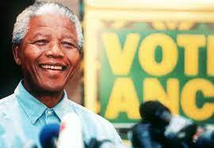

- Nelson Rolihlahla Mandela was a South African anti-apartheid activist and politician who served as the first president of South Africa from 1994 to 1999. He was the country's first black head of state and the first elected in a fully representative democratic election.
- After 27 years in prison, Nelson Mandela was freed in 1990 and negotiated with State President F. W. de Klerk the end of apartheid in South Africa, bringing peace to a racially divided country and leading the fight for human rights around the world.
- Nelson Mandela is known for several things, but perhaps he is best known for successfully leading the resistance to South Africa's policy of apartheid in the 20th century, during which he was infamously incarcerated at Robben Island Prison (1964–82).

Quotes of Mandela
- Education is the most powerful weapon which you can use to change the world.
- It always seems impossible until it’s done.
- After climbing a great hill, one only finds that there are many more hills to climb.
- No country can really develop unless its citizens are educated.
- Courageous people do not fear forgiving, for the sake of peace.
- The love of money is the root of all evil.